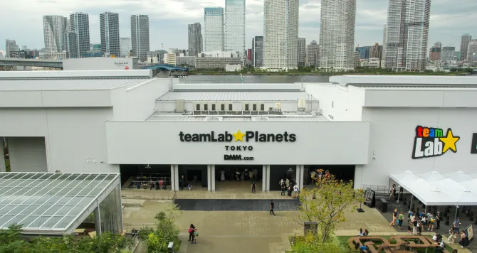
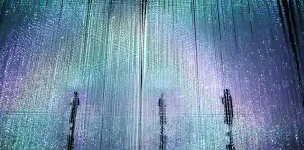
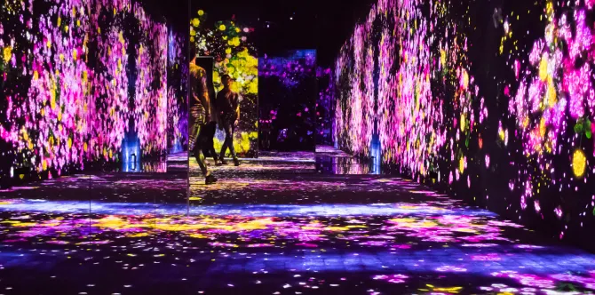
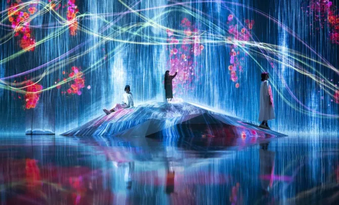
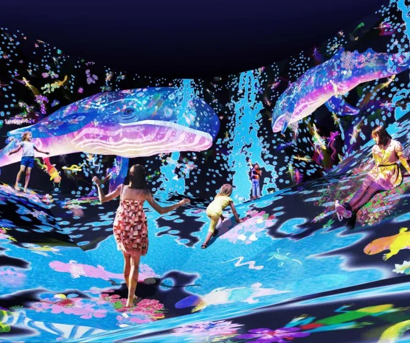

TEAMLAB borderless (tokyo)
Entre architecture et art numérique, bienvenu dans les musées du future

La piéce de la foret de lampes de teamlab borderless
Teamlab borderless est un musée d’art moderne interactif créé par le collectif teamlab, situé à tokyo dans l’arrondis-sement de Koto et inauguré le 21 juin 2018.
Il est devenu en à peine quelque mois l’un des plus grands et réputés sites touristiques de la baie de Tokyo.
Sa réputation est telle qu’il est même devenu dès 2019 le musée le plus visité au monde avec 2,2 million de personnes d'après le guinness.
Mais comment est ce que ça fonctionne ?

Entrée de teamLab Planets à Tokyo
-Pour commencer, au niveaux des places, il vas falloir les prendre avec des mois d’avance car les places sont limité et sa popularité gigantesque.
-Après pour pouvoir interagir avec tout le contenus des salles, ils est conseillé d’utiliser l'application teamlab car elle ajoute de nouvelles fonctionnalité à l'exposition.
-Et pour finir il est préconisé d'éviter les jupes et de prendre une tenus claire car les salles composant le bâtiment on pour la plupart des miroire au sol et car les habilles claire permets une meilleur réflexion de la lumière.
Mais qu’est-ce que teamlab ?
Teamlab est une organisation créée en 2001 à tokyo et est composée d'experts de différents corps de métier tels que des artistes, programmeurs, ingénieurs, animateurs 3D, mathématiciens et architectes.
Ce collectif a pour but de dépasser les limites de cet art en mélangeant nature et création artificielle.

La pièce des reflets
Est-ce accessible ?
-Cette exposition possède malheureusement des salles inaccessibles au personnes à mobilité réduite.
-L’exposition sera aussi à éviter pour les épiléptique et les personne en cas de fragilité auditive.
-Et les chien d'assistance seront aussi interdit.

La piéce du monde de cristal
Mot de la fin
Ce lieux a la fois inventif et merveilleux et saura ravir les petits comme les plus grand par sa richesse son esthétisme et son ludisme, et le seul point noir a se musée et son manque d’accessibilté pour certain handicape courant.

La piéce de la cascade
Pour commender ces places, rendez vous ici
Et si le TeamLab Borderless (tokyo) vous a plus, alors regarder notre article sur 8 autre musée d’art numérique et lumineux

Autre lieux
Frise